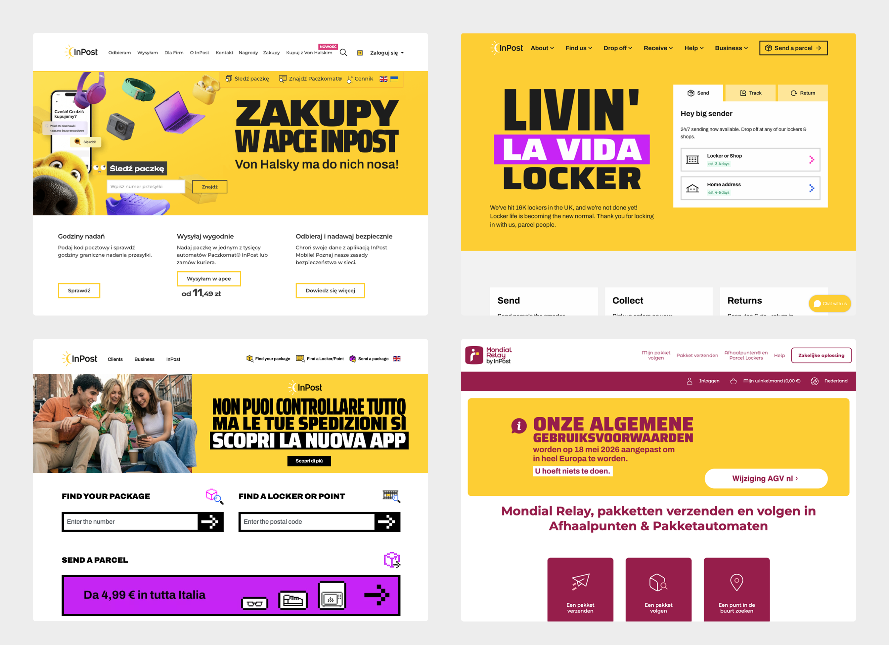
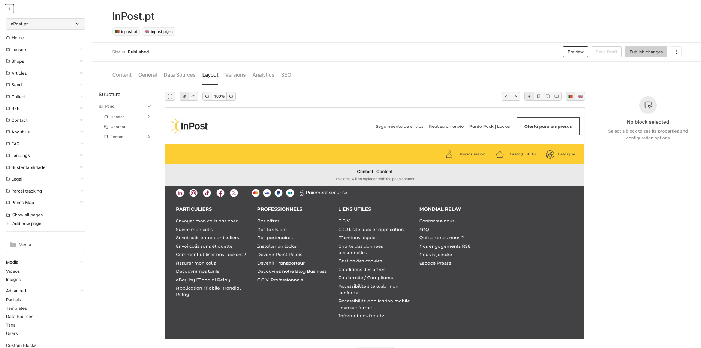
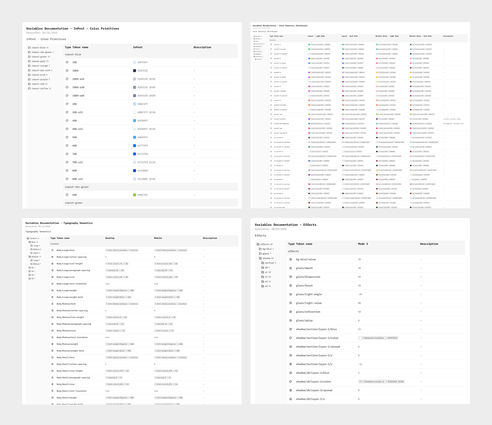
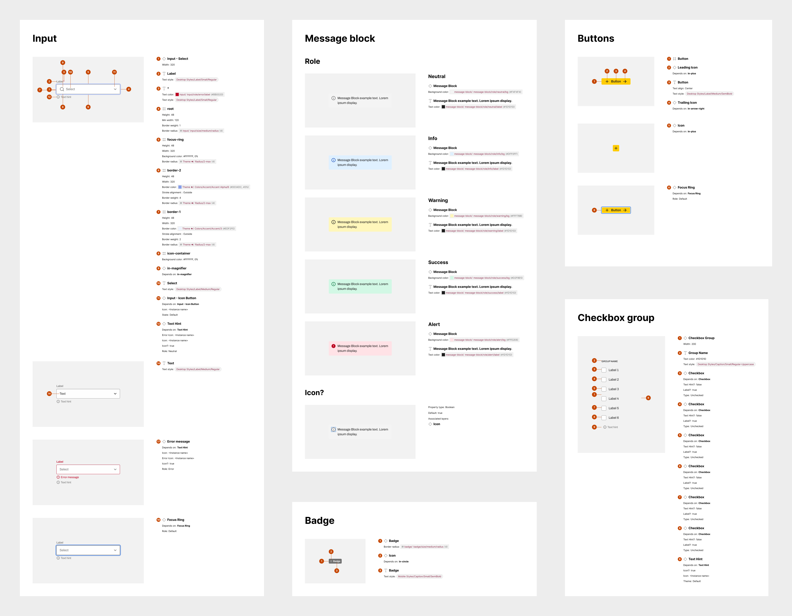
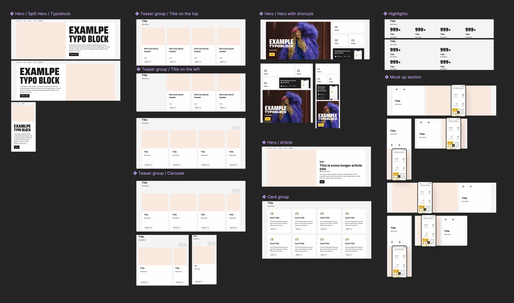
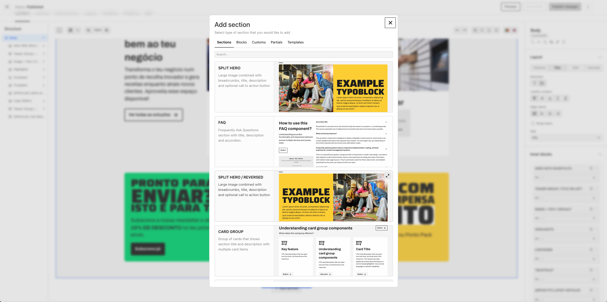

Problem
Different markets used different CMS platforms and website visual styles. External agencies were needed to create and update pages, making routine work slow and expensive.
Goal
Create one shared tool for every market, with a consistent visual language, so teams could build pages themselves faster—without needing a designer or engineer.

Our Approach
We decided to build our CMS on Payload↗, an open-source solution. We created Content Platform: a simple visual page-building tool, similar to Webflow. It gives InPost one tool to build, publish, and maintain websites across every market.

Our Visual Design:
Layer #1 — Tokens
Tokens are the smallest building blocks of our design system. We created a shared set of primitive and semantic colour tokens used across all InPost products. They provide one foundation with different modes for each brand, such as Mondial Relay in France and InPost in Poland.

Layer #2 — Web Design System
Based on these tokens, we built a web design system of reusable components.

Layer #3 — Sections
Sections are ready-made parts of a website built with the web design system. They let teams assemble complete pages quickly—a simple landing page can use five to eight sections.

Layer #4 — Ready-made Sections in Content Platform
We recreated the sections designed in Figma one-to-one in Content Platform. Creators can choose ready-made sections and use them to build pages.

Result
We have already migrated hundreds of pages across different markets, including the full inpost.pt↗ and inpost.es↗ websites. Creating new pages is now a matter of hours instead of weeks. The next markets are in progress.